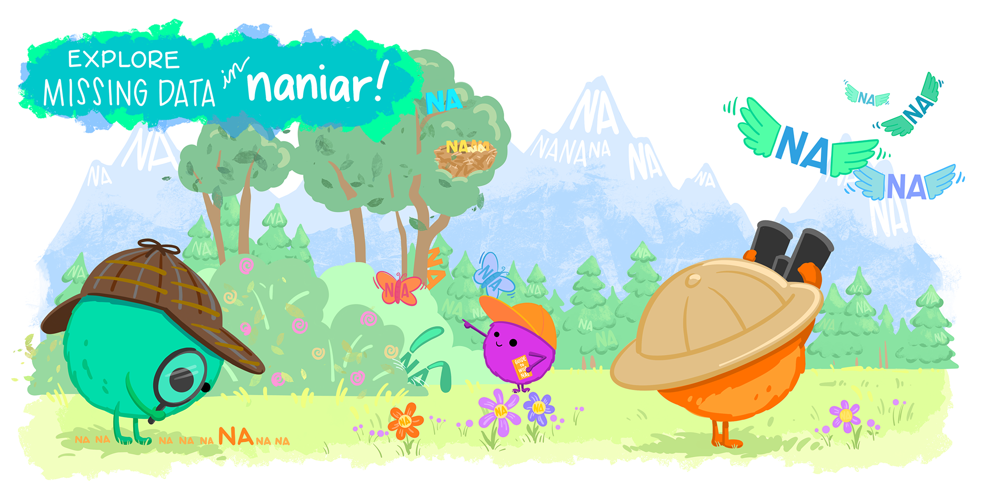

naniar package (a play on Narnia) if you haven’t already!
drop_na()filter() silently drops NAs
naniar functions to work with NAs in a more flexible way
replace_na() (and fct_na_value_to_level() for factors)NA using replace_with_na()
NAsWe may want to remove rows that have missing data, coded as NA
First, summarize and visualize missingness using naniar
We’ll take a quick look at the counts
drop_na(): removing missingness from all variables in the datasetdrop_na() removes rows with missing data
# A tibble: 2,151 × 7
ed race_original srh sex act_vig height degree
<dbl> <fct> <fct> <fct> <fct> <dbl> <fct>
1 12 White/Caucasian Good Female Never 1.60 High school…
2 16 White/Caucasian Excellent Male >1 per week 1.88 Master's de…
3 16 Black/African American Good Male 1 per week 1.75 Master's de…
4 17 White/Caucasian Poor Female Never 1.55 Professiona…
5 11 Black/African American Excellent Male Never 1.78 None
6 13 Black/African American Fair Male Never 1.78 Associate's…
7 16 White/Caucasian Very Good Male 1 per week 1.73 Master's de…
8 12 White/Caucasian Good Male Never 1.88 High school…
9 12 Black/African American Fair Male Never 1.73 None
10 12 Black/African American Very Good Male Never 1.73 None
# ℹ 2,141 more rowsPay attention to the number of rows for each of these results
drop_na(): removing missingness from all variables in the datasetfilter(): it can silently drop your NAs"Poor" category from srh (self-reported health)srh has 4 missing values!
filter_out() to keep NAsfilter_out() from the dplyr package to keep the NAs when we want to perform an exclusionary (!=) filterBuild this habit
Whenever you filter on a column that has missing values, stop and check: how many observations were removed and does that correspond to the number of values I expect (excluding NAs?)
replace_na(): replace missing values with a specific valueSometimes we want to fill in missing values with a specific value instead of removing the row
We can use the replace_na() function inside mutate() to set NAs to a specific value
replace_na() works on numeric and character variables, not factors
Here’s the general version of the function:
replace_na() swaps out any NA in variable for the value we provide. It’s good practice to assign this to a new variable, like variable_filled
variable is the column we want to fill in
value_to_fill_in is the value we want to use to replace the missing
height is missing, we want to replace it with the average height across the dataset
replace_na() to fill in the missing values:replace_na() in mutate() to create a new variable, height_filled
replace_na() swaps out any NA in height for the value we provide
height is the column we want to fill in.height
fct_na_value_to_level(): filling a factor variableforcats version of replace_na() for factor variables
We can use the fct_na_value_to_level() function inside mutate() to set NAs to a specific value
fct_na_value_to_level() works on factors!!
General version of the function is similar to replace_na():
fct_na_value_to_level() in mutate() to create a new variable, variable_filled
fct_na_value_to_level() swaps out any NA in variable for the level we provide
variable is the column we want to fill in
"new level to replace NAs" is added as a new level, and used to replace the missing values
race_original is missing, we want to replace it with Unknown
replace_na() to fill in the missing values:fct_na_value_to_level() swaps out any NA in race_original for the level we provide
race_original is the column we want to fill in
"Unknown" is added as a new level, and used to replace the missing values
replace_with_na(): replace a factor level with NA-99 or "999" to indicate missingness, but because it’s a valid number, R doesn’t treat it as NA
replace_with_na() takes a named list of columns and values to replace with NA
numeric_var1 is the name of a numeric column, and numeric_val1 is the value to replace with NA
numeric_var2 is the name of a numeric column, and numeric_val2a, numeric_val2b, and numeric_val2c are the values to replace with NA
factor_var1 is the name of a factor column, and "factor_level1" and "factor_level2" are the levels to replace with NA
NA (1/2)hrs_06_race_filled dataset with NAreplace_with_na() takes a named list of columns and values to replace with NA
sex column, we will replace "Male" with NA
height column, we will replace 70 with NA
race_filled column, we will replace "Other" and "Unknown" with NA
NA (2/2)NAWe learned a few ways to handle missing data, once we know it’s there
drop_na() removes rows with missing data — target specific columns, or drop any row with any missingness
filter() silently drops NA rows unless you explicitly keep them with | is.na(...); filter_out() handles this for you automatically
replace_na() fills in missing values for numeric and character columns
fct_na_value_to_level() fills in missing values for factor columns, by adding a new explicit level
replace_with_na() goes the other direction: turns a specific value (or factor level) into NA
tabyl(), or compare miss_var_summary() before and afterThere is no single “correct” way to handle missing data — the right choice depends on why the data is missing and what you’re trying to learn from it
Missing data: transformations